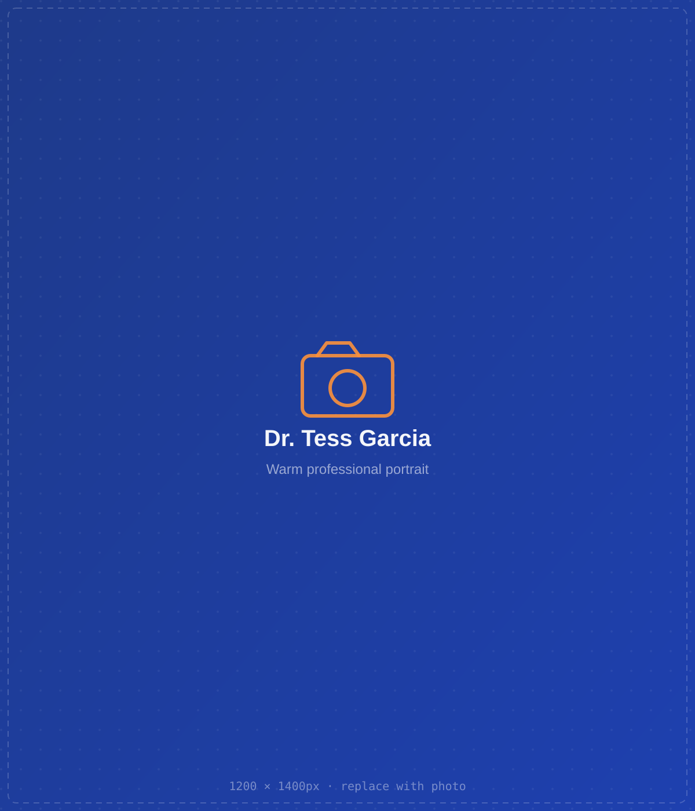
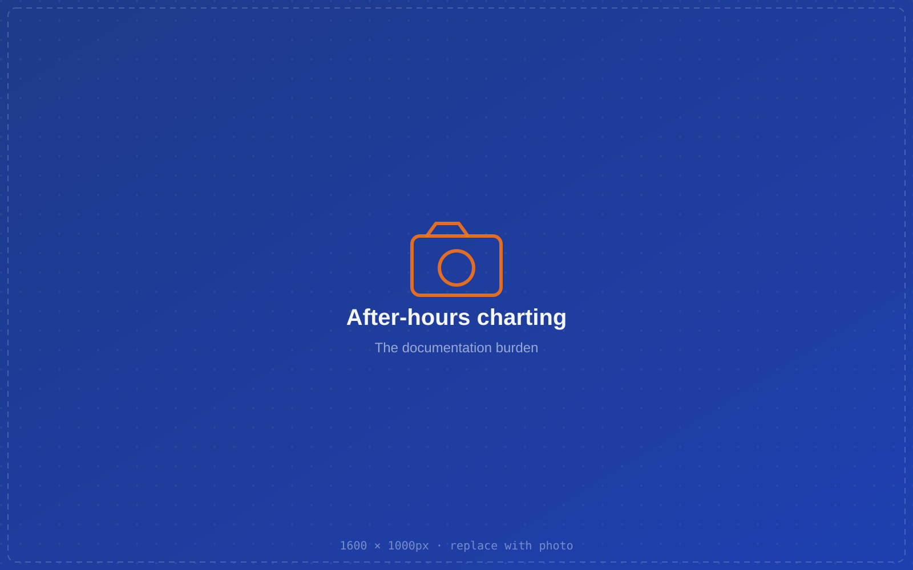
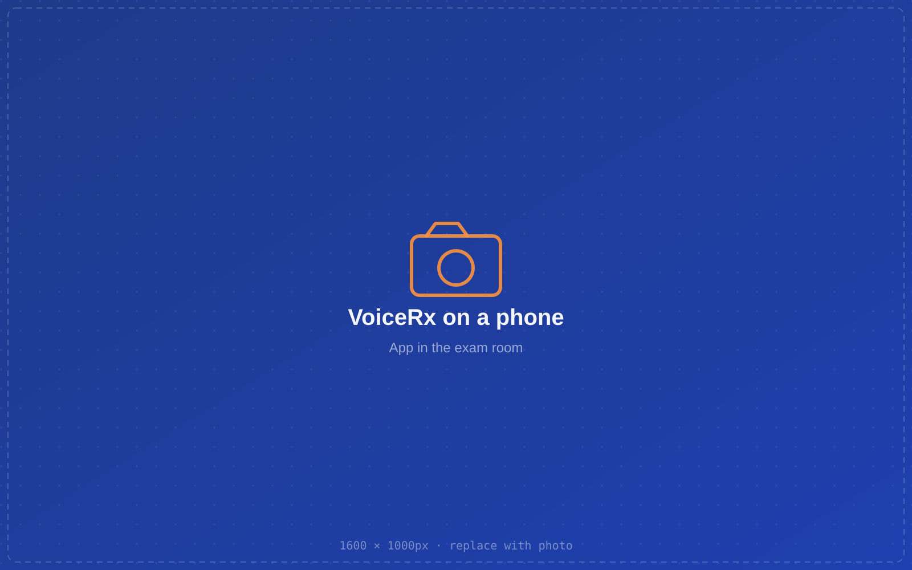
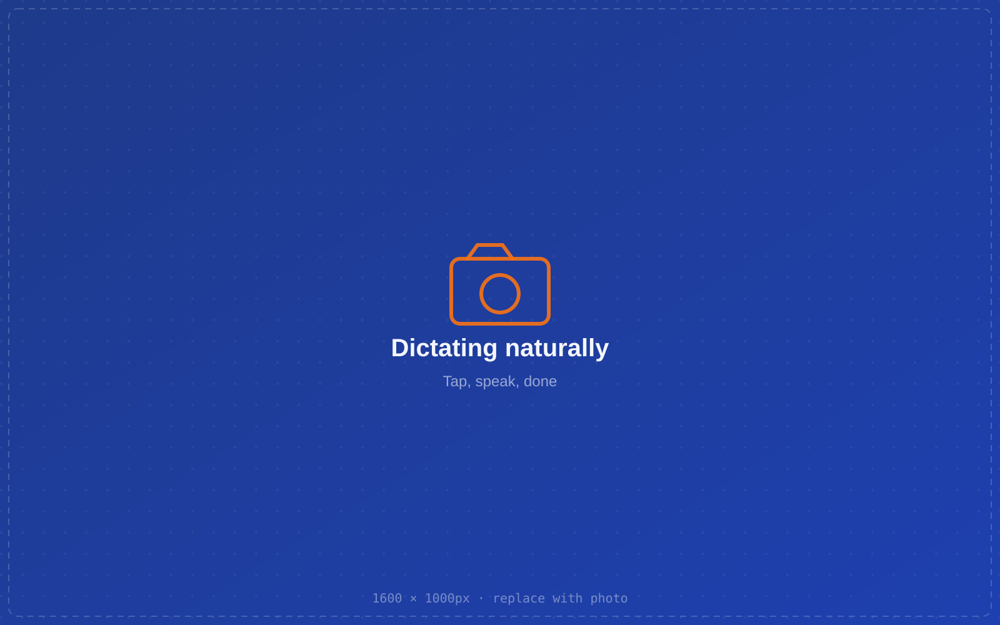
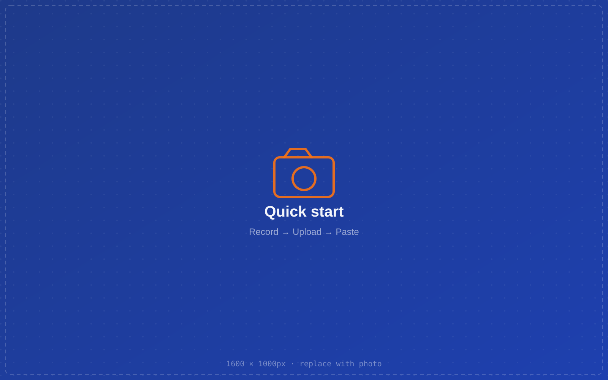
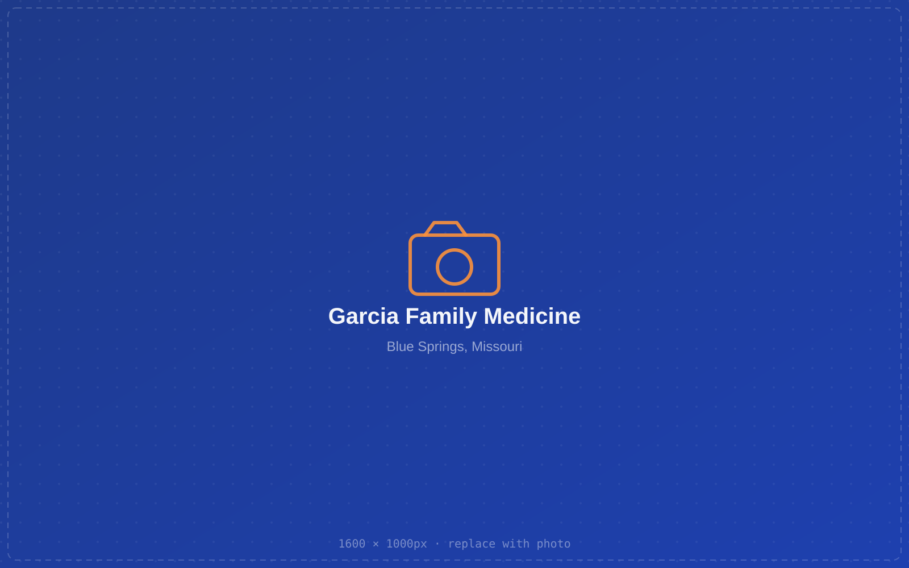

Your note.
Done.
Built at the bedside, not in a boardroom.
I’m Dr. Tess Garcia. Like most family physicians, I used to spend my evenings finishing charts long after the last patient went home. VoiceRx is the tool I wished I’d had — it listens while I talk to my patients, and turns that conversation into a clean note I review and sign.
This booklet walks you through what VoiceRx is, how it protects patient privacy, and the simple three-step routine that gets a visit from spoken words into the chart.

The note shouldn’t cost you your evening.

For every hour a physician spends with patients, studies have found they spend nearly two more on paperwork and the EHR. Much of it spills into the evening — the “pajama time” that quietly drives burnout.
Dictating into a recorder helps, but then someone still has to transcribe, format, and clean it up. VoiceRx closes that gap: you speak naturally, and a structured, review-ready note comes back in seconds.

A dictation assistant that speaks medicine.
VoiceRx is a private, browser-based dictation app made for the clinic. Tap the microphone, talk through the visit the way you normally would, and it cleans the transcript and formats it into the note type you choose.
- Runs on your phone — nothing to install
- Cleans filler words and formats automatically
- Flags anything uncertain for you to confirm
- Nothing is final until you approve it
Three taps from spoken to structured.

Dictate
Tap the mic and talk through the encounter naturally. The screen stays awake; there’s no time limit on a long visit.
Clean & Format
One tap turns the raw transcript into a tidy, organized note in the format you picked.
Review & Approve
Confirm any flagged items, make edits, and approve. Only then is it ready for the chart.
Long visit, or stepping away? Record on your phone and upload the audio later — VoiceRx handles recordings of any length.
Patient privacy is the default, not a setting.

Signed BAA
VoiceRx operates under a Business Associate Agreement, so protected health information is handled the way HIPAA requires.
You hold the keys
Access is gated by a provider login and token. The app runs on your device, under your account.
Nothing auto-files
A note is marked pending review until the physician approves it. It is never a finalized record on its own.
Separate identities
Documented biological sex, gender identity, and stated pronouns are tracked distinctly and respectfully.
The physician is always the final word.
VoiceRx never pretends to be the doctor. When the AI is unsure of a term, a dose, or a name, it doesn’t guess — it marks it.
Anything uncertain comes back as a [verify:…] flag. Every flag must be confirmed before a note can be approved, so nothing ambiguous slips into the record.
From your voice to AtlasMD.
Once you approve a note, getting it into the EHR is a copy-and-paste away. VoiceRx copies the full, formatted note — including the identification header — reliably to your clipboard.
- Approve the note on your phone
- Copy the formatted note in one tap
- Paste into the patient’s chart in AtlasMD
An optional Encounter ID keeps multiple visits for the same patient cleanly separated in AtlasMD.
Your everyday routine.

Record the visit
Open VoiceRx, add the patient, and tap the mic — or record on your phone for a longer encounter.
Upload & clean
If you recorded separately, tap Upload a recording, then Clean & Format.
Review, copy, paste
Clear the flags, approve, copy, and paste into AtlasMD on your desktop. Done before you leave the room.

Every word is yours.
VoiceRx gives clinicians back the part of medicine that drew them to it — the patient in front of them — and the part of the evening that belongs to their families.